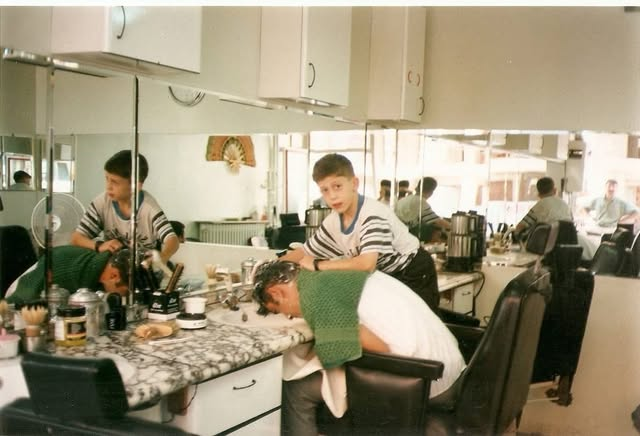

HerenknipbeurtPopulair
Persoonlijk advies, strakke fade of klassieke snit, inclusief afwerking & styling.
€25
Welkom bij MK Style, het moderne herenkapsalon van Murat. Al meer dan 16 jaar actief in Bilzen voor scherpe fades, verzorgde heren- & kindersnitten en strak baardwerk — gewoon binnenstappen zonder reservatie.


Spring binnen wanneer het in jouw agenda past — geen boekingsgedoe.
Sinds 2010 een vertrouwde naam voor herenkapsels en fades in Bilzen.
Van moderne skin fades en klassieke snit tot strakke baardcontouren.
Ruime en gratis parkeerplaats recht voor de deur op Sint-Gertrudisplein.
Duidelijke service met topkwaliteit verzorgingsproducten en oog voor elk detail. Gewoon plaatsnemen in ons vernieuwd interieur.
Persoonlijk advies, strakke fade of klassieke snit, inclusief afwerking & styling.
Volledige verzorging: strakke snit gecombineerd met baard trimmen en scherp aflijnen.
Vakkundig modelleren, contouren scheren met mes en verzorgende baardolie.
Geduldig en vlot geknipt voor jongens t/m 12 jaar — altijd welkom zonder afspraak.
Strakke buzzcut of bros op één of meerdere lengtes, netjes afgelijnd in de nek.
Verfrissende wasbeurt, hoofdhuidmassage, knipbeurt en premium afwerking.
* Richtprijzen in de zaak — vraag gerust advies aan Murat voor jouw gewenste stijl.



Voor Murat is knippen geen gewone job, maar een ambacht dat er al van jongs af aan in zit. Na meer dan 16 jaar ervaring in Bilzen (waar velen hem kennen van zijn jarenlange vakmanschap bij 38 Style) zette hij de stap naar een gloednieuwe, eigen zaak: MK Style.
Op het Sint-Gertrudisplein 24 in Beverst (Bilzen-Hoeselt) ontvangt Murat je in een strak, lichtrijk interieur met vernieuwd zitcomfort. Dezelfde vertrouwde kwaliteit en persoonlijke babbel, maar dan op jouw tempo — volledig zonder afspraak.
Neem alvast een kijkje in onze vernieuwde barbershop in Beverst en volg onze laatste acties en giveaways op sociale media.
 Sint-Gertrudisplein 24 • Zonder Afspraak
Persoonlijke Service van Topkwaliteit
Vernieuwd Zitcomfort
Sint-Gertrudisplein 24 • Zonder Afspraak
Persoonlijke Service van Topkwaliteit
Vernieuwd Zitcomfort
 Nieuwe Locatie in Bilzen-Hoeselt
Premium Grooming & Acties
Nieuwe Locatie in Bilzen-Hoeselt
Premium Grooming & Acties
Centraal gelegen op het Sint-Gertrudisplein in Beverst — vlot bereikbaar vanuit heel Bilzen, Hoeselt, Munsterbilzen, Diepenbeek en Genk.
Tip: Op feestdagen of speciale gelegenheden worden aangepaste uren meteen hier én bovenaan de website weergegeven.